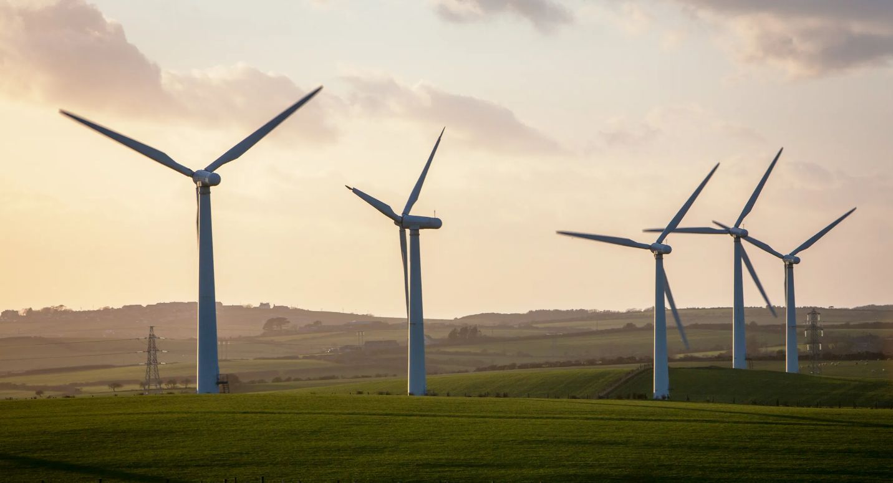
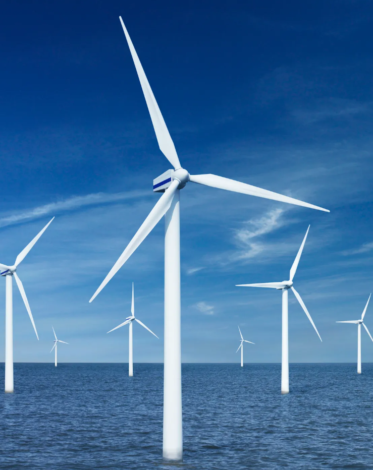

| Noderīgi |  |
Vēja ģenerators var būt ļoti noderīgs enerģijas avots daudzām iestādēm un mājsaimniecībām. Šeit ir daži iemesli, kāpēc vēja ģenerators var būt noderīgs:
Ietaupījumi elektroenerģijas rēķinos: Vēja ģenerators var būt lielisks veids, kā samazināt elektroenerģijas rēķinus. Ja vēja ātrums ir pietiekami augsts, vēja ģenerators var radīt pietiekami daudz enerģijas, lai nodrošinātu visu mājsaimniecības elektroenerģiju.
Videi draudzīgs enerģijas avots: Vēja ģenerators ir videi draudzīgs enerģijas avots, jo tā darbība nerada oglekļa dioksīdu un citas kaitīgas emisijas. Tādējādi vēja ģenerators var palīdzēt samazināt jūsu oglekļa pēdas izmēru un aizsargāt apkārtējo vidi.
Uzticamība: Ja vēja ģeneratoru uzstāda pareizi, tas var būt ļoti uzticams enerģijas avots. Lai gan sākotnējā ieguldījuma izmaksas var būt augstas, vēja ģenerators ilgtermiņā var nodrošināt ietaupījumus elektroenerģijas rēķinos un būt ilgtspējīgs enerģijas avots.
Enerģijas neatkarība: Vēja ģenerators var nodrošināt enerģijas neatkarību no citiem enerģijas avotiem, piemēram, elektrosabiedrībām. Tas ir ļoti noderīgi, ja jūsu reģionā ir bieži enerģijas pārtraukumi vai ja jums ir nepieciešama nepārtraukta elektroapgāde.
Kontaktinformācija
| 200 Broadway Blvd NE Albuquerque, NM 87102, USA epasts@wventusfit.com +371 12345678 |
 |